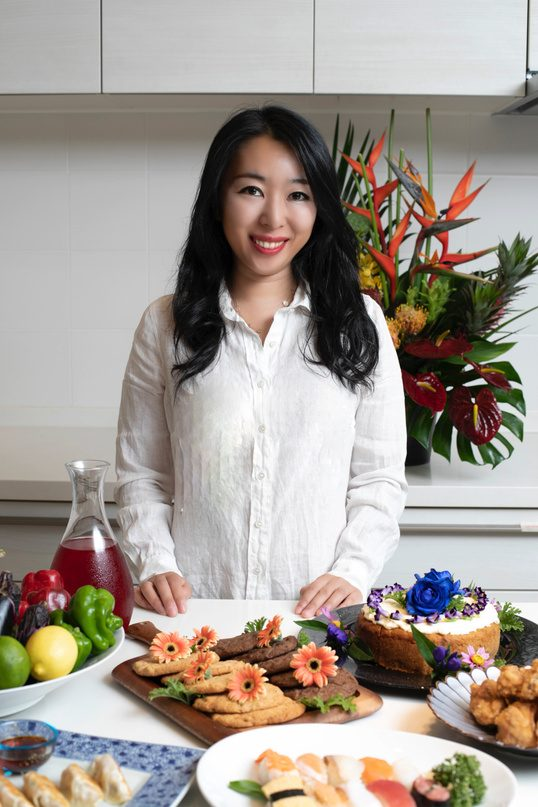
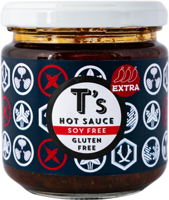
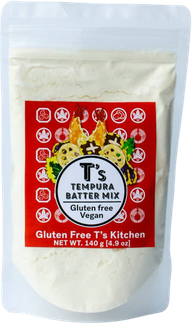
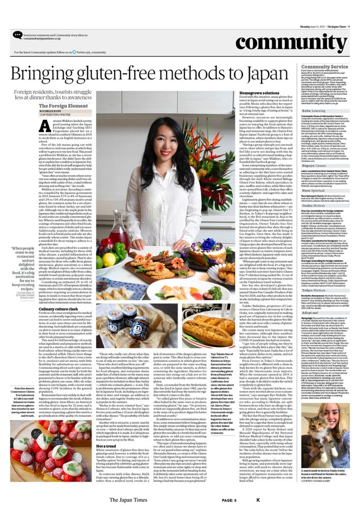

COMPANY
会社概要About Us
株式会社飯野 ― Gluten Free T's KitchenIino Corporation — Gluten Free T's Kitchen

会社情報Company profile
| 会社名Company | 株式会社飯野（Iino Co., Ltd.）Iino Co., Ltd. |
|---|---|
| 所在地Address | 〒135-0034 東京都江東区永代2-35-82-35-8 Eitai, Koto-ku, Tokyo 135-0034 |
| 設立Established | 1976年11月1日November 1, 1976 |
| 代表者Representative | 代表取締役 飯野孝子Takako Iino, CEO |
| 資本金Capital | 1,000万円10 million yen |
| 事業内容Business |
|
| 主要店舗Restaurants |
|
| 主要取引先Major clients | アマゾンジャパン合同会社／日本酒類販売株式会社／国分グループ本社株式会社／井辻食産／新潟製粉Amazon Japan G.K. / 日本酒類販売株式会社 / 国分グループ本社株式会社 / 井辻食産 / 新潟製粉 |
| グループ会社Group company | 株式会社たいのいかこ株式会社たいのいかこ |
| お問い合わせContact | TEL 03-6874-7719 E-mail 61@glutenfree.co.jp |
受賞歴Awards
- GIG アジア初グルテンフリー認証レストランGIG — First certified gluten-free restaurant in Asia
- 農林水産省主催 Food Action Nippon Award 2019 アマゾン賞Food Action Nippon Award 2019 (MAFF) — Amazon Award
- カナダ グルテンフリーオブザイヤー2020 パントリー部門 グランプリGluten-Free Product of the Year 2020, Canada — Pantry category Grand Prix
PHILOSOPHY
企業理念Our philosophy
「制限ではなく、可能性を味わう新しい食文化」"A new food culture — savoring possibilities, not restrictions."
私たちは、グルテンフリーを特別な制限食ではなく、多様な食の選択肢として提供し、健康と美味しさを両立させる食文化を広げます。We offer gluten-free food not as a special restricted diet, but as one of many food choices — spreading a food culture where health and great taste go hand in hand.
CONCEPT
食の制限から、可能性を味わうレストランです。From dietary restrictions to delicious possibilities.
グルテンフリーを必要とする方々の笑顔を目指して、ソウルウォーミングフードを提供します。We serve soul-warming food, aiming to bring smiles to everyone who needs gluten-free.
- 国際認証による信頼と、独自のノウハウ・知識Trust backed by international certification, and our own know-how
- グルテンアレルギーや食事制限があっても楽しめる商品を開発Products everyone can enjoy, even with gluten allergies or dietary restrictions
- 2015年から、グルテンアレルギー・その他のアレルギーを独自に研究Independent research on gluten and other allergies since 2015
VISION
食の多様化を広げる。Expanding food diversity.
ヴィーガン・ハラール・ベジタリアンなど、食の多様化を広げることが私たちのビジョンです。Our vision is to expand food diversity — vegan, halal, vegetarian and more.
- 日本独自の旨味を世界へ届けますBringing Japan's unique umami to the world
- 700を超えるオリジナルレシピ・商品を開発Over 700 original recipes and products developed
事業内容Our businesses
豊富なグルテンフリーやアレルギー対応の経験と知識を活かして、事業をしています。We put our extensive experience with gluten-free and allergy-friendly food to work across our businesses.


沿革History
- 六本木一丁目に「Gluten Free 61 Cafe and bar」オープンOpened "Gluten Free 61 Cafe and bar" in Roppongi 1-chome
- Uber Eats ジャパンで初のグルテンフリーカテゴリーを創設し、第一号店として参加Helped launch Uber Eats Japan's first gluten-free category, joining as its first restaurant
六本木7丁目に移転し「Gluten Free T's Kitchen」オープンMoved to Roppongi 7-chome and opened "Gluten Free T's Kitchen"
トリップアドバイザー 東京エリア95,148店舗中 第1位Ranked No.1 of 95,148 restaurants in Tokyo on Tripadvisor
Validated Gluten Free Safe Spot ― GIGアジア初のグルテンフリー認証レストランに選出Validated Gluten Free Safe Spot — Asia's first GIG-certified gluten-free restaurant
農林水産省主催 Food Action Nippon Award 2019 アマゾン賞Food Action Nippon Award 2019 (MAFF), Amazon Award
グルテンフリーオブザイヤー カナダ2020 パントリー部門 グランプリ受賞Gluten-Free Product of the Year 2020 Canada, Pantry category Grand Prix
Googleビジネス「2020 港区人気店」に選出Selected as a "2020 Popular Restaurant in Minato" on Google Business
トリップアドバイザー 外国人人気レストラン 全国15位に選出Ranked 15th nationwide among restaurants popular with international visitors on Tripadvisor
- ジャパンタイムズの1面に「日本の有名なグルテンフリーレストラン」として紹介されるFeatured on the front page of The Japan Times as a well-known gluten-free restaurant in Japan
- 東京メトロ ウェブサイトの2月のバナー表紙に掲載Featured on the Tokyo Metro website's February banner
- アパホテル上野広小路1階に2店舗目オープンOpened our 2nd location on the ground floor of APA Hotel Ueno-Hirokoji
- 12月 主婦と生活社より初の書籍『グルテンフリーシェフが教える米粉のヘルシープレート』発売December: first book, a rice-flour healthy plate cookbook by a gluten-free chef, published by Shufu to Seikatsu Sha
- 4月 原宿に3店舗目オープンApril: 3rd location opened in Harajuku

MEDIA ・ 2021年6月June 2021
The Japan Times
世界的標準に合わせたアジア初のグルテンフリーレストランであり、日本に画期的なグルテンフリーを伝える人として、ジャパンタイムズの一面になり、海外からも評価をいただきました。As Asia's first gluten-free restaurant built to international standards, and as someone bringing true gluten-free to Japan, our owner was featured on the front page of The Japan Times and recognized internationally.
日本を含めアジアでは、グルテンフリーの知識や認識がまだ世界標準になっていないため、実際にはグルテンフリーと認められないものも多いのが現状です。In Asia, including Japan, gluten-free knowledge has yet to reach international standards, so many products labeled gluten-free would not actually qualify.